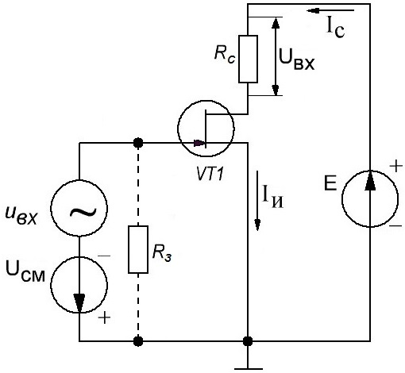
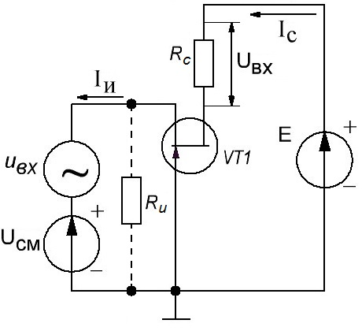
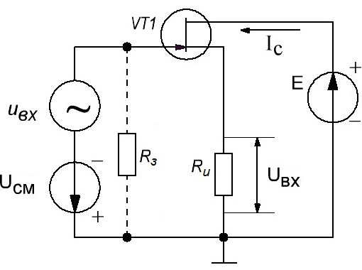

Схемы включения полевых транзисторов
Как и биполярный, полевой транзистор можно рассматривать как четырехполюсник, у которого два из четырех контактов совпадают. Таким образом, можно выделить три вида схем включения (рис. 1):
Схема включения с общим истоком
Схема включения полевого транзистора с общим истоком (рис. 1) является аналогом схемы с общим эмиттером для биполярного транзистора. Такое включение весьма распространено в силу возможности давать значительное усиление по мощности и по току, фаза напряжения цепи стока при этом переворачивается.
Входное сопротивление непосредственно перехода затвор-исток достигает сотен мегаом, хотя оно может быть уменьшено путем добавления резистора между затвором и истоком с целью гальванически подтянуть затвор к общему проводу (защита полевого транзистора от наводок).
Величина этого резистора Rз (от 1 до 3 МОм обычно) подбирается так, чтобы не сильно шунтировать сопротивление затвор-исток, при этом не допускать перенапряжения от тока обратносмещенного управляющего перехода.
Существенное входное сопротивление полевого транзистора в схеме с общим истоком является важным достоинством именно полевого транзистора, при его использовании в схемах усиления напряжения, тока и мощности, ведь сопротивление в цепи стока Rс не превышает обычно единиц кОм.

Рис. 1 - Схемы включения с общим истоком полевого транзистора
Схема включения с общим затвором
Схема с общим затвором (рис. 2) — аналог каскада с общей базой для биполярного транзистора. Усиления по току здесь нет, потому и усиление по мощности многократно меньше, чем в каскаде с общим истоком. Напряжение при усилении имеет ту же фазу, что и управляющее напряжение.

Рис. 2 - Схемы включения с общим затвором полевого транзистора
Поскольку выходной ток равен входному, то и коэффициент усиления по току равен единице, а коэффициент усиления по напряжению, как правило, больше единицы.
В данном включении присутствует особенность - параллельная отрицательная обратная связь по току, так как при повышении управляющего входного напряжения, потенциал истока возрастает, соответственно ток стока уменьшается, и снижает напряжение на сопротивлении в цепи истока Rи.
Так с одной стороны напряжение на сопротивлении истока увеличивается благодаря росту входного сигнала, но уменьшается снижением тока стока, это и есть отрицательная обратная связь. Данное свойство делает шире полосу пропускания каскада в области высоких частот, поэтому схема с общим затвором популярна в усилителях напряжения высоких частот, и особенно востребована в высоко устойчивых резонансных схемах.
Схема включения с общим стоком
Схема включения полевого транзистора с общим стоком (истоковый повторитель) (рис. 3) является аналогом схемы с общим коллектором для биполярного транзистора (эмиттерный повторитель). Такое включение используется в согласующих каскадах, где выходное напряжение должно находиться в фазе с входным.
Входное сопротивление перехода затвор-исток достигает сотен мегаом, при этом выходное сопротивление Rи сравнительно небольшое. Данное включение отличается более высоким частотным диапазоном, чем схема с общим истоком. Коэффициент усиления по напряжению близок к единице, так как напряжение исток-сток и затвор-исток для данной схемы обычно близки по величине.

Рис. 3 - Схемы включения с общим стоком полевого транзистора
Источники:
habr.com - Полевые транзисторы
electrono.ru - Полевые транзисторы
electricalschool.info - Схемы включения полевых транзисторов